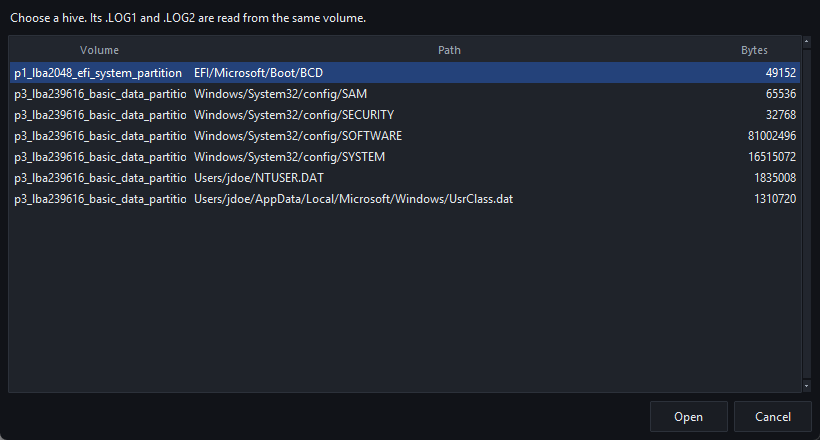
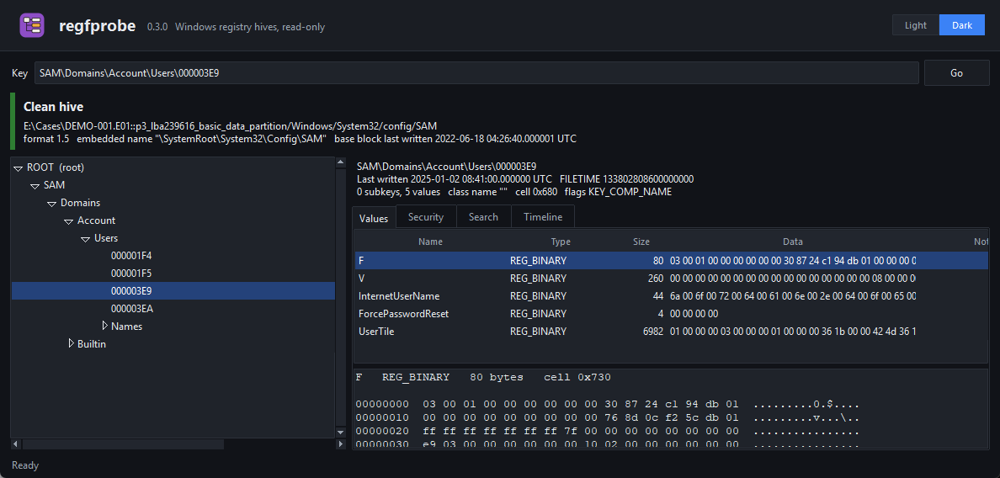
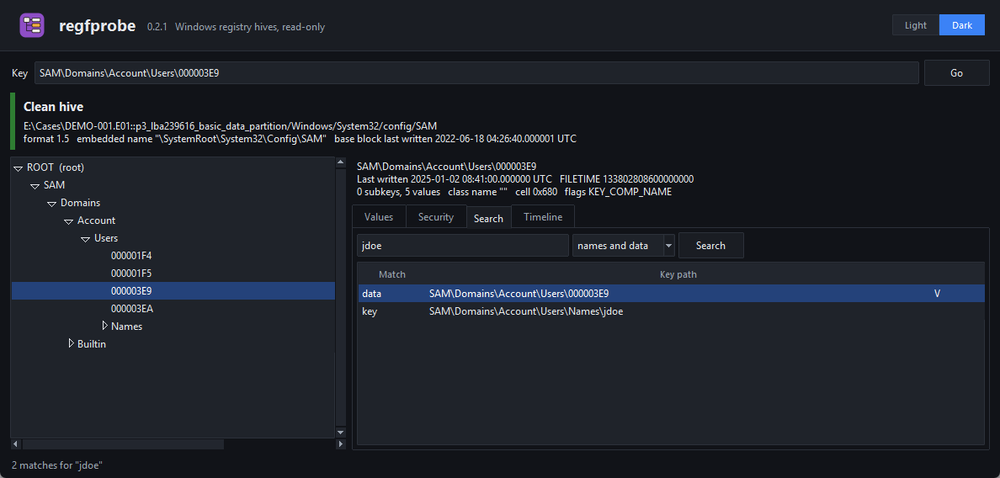
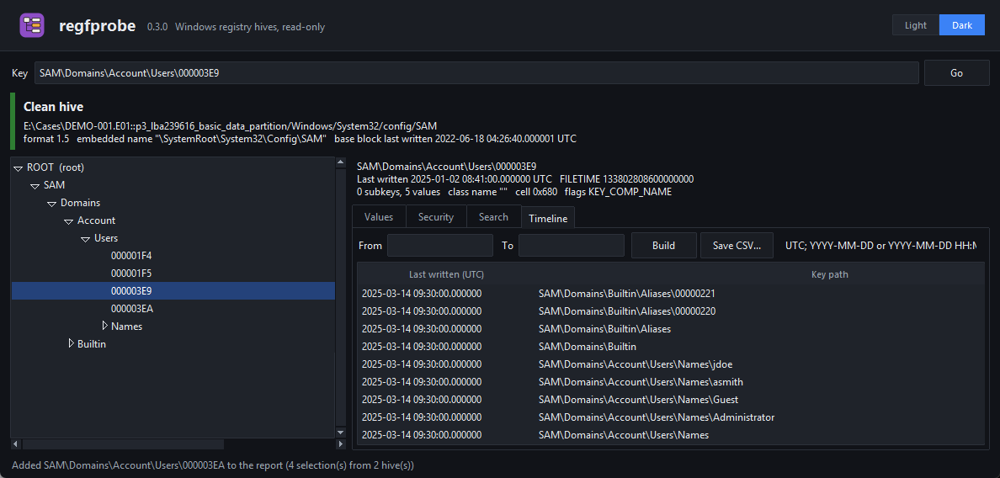
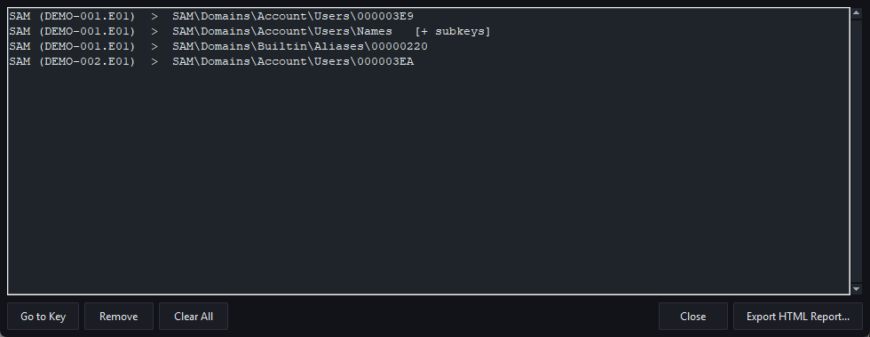
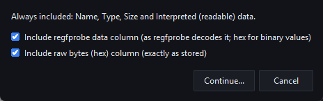
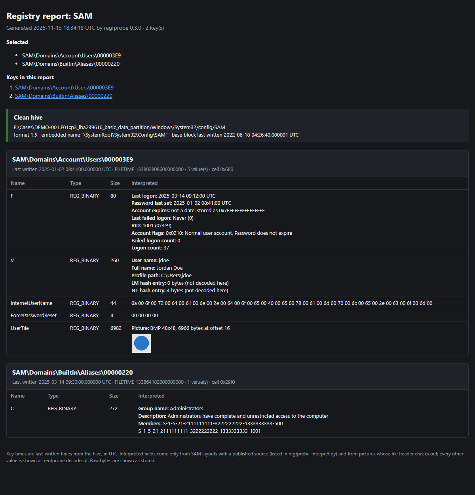

1. What regfprobe is
regfprobe reads Windows registry hive files (SAM, SYSTEM, SOFTWARE, SECURITY, NTUSER.DAT, UsrClass.dat, Amcache.hve
and others) offline and read-only. It never writes to a hive, its logs, or the image it reads them
from. It can open a loose hive file, or reach straight into an E01 or raw disk image and read the hive from there,
along with its .LOG1/.LOG2 transaction logs.
It is written in plain Python with no packages to install. The same reading engine (regfprobe.py) runs
the window, the command line, and every export, so the data you see on screen is the data that ends up in a report.
2. Getting started
What you need
- Python 3.10 or newer (from python.org on Windows; it includes Tkinter).
- These files together in one folder:
File What it does regfprobe.pyThe hive reader and command line regfprobe_gui.pyThe window regfprobe_theme.pyDark mode regfprobe_report.py,regfprobe_interpret.pyHTML reports and the Interpreted column regfprobe_profile.pyKey profiles qnxprobe.py,ewfprobe.pyReading disk images (from the qnxprobe project). Only needed to open hives inside E01/raw images. docs/This manual and its screenshots
Starting it
python regfprobe_gui.py
python regfprobe_gui.py "C:\exports\SYSTEM"
python regfprobe_gui.py --image "D:\Cases\CASE-001.E01"
python regfprobe_gui.py "C:\exports\SOFTWARE" --key "Microsoft\Windows NT\CurrentVersion"With a hive or --image, the window opens straight to it; --key jumps to a key once the hive is open.
3. Opening hives
A hive file
File → Open Hive... (Ctrl+O) opens a hive you have already exported.
Its .LOG1 and .LOG2 are picked up automatically when they sit beside it.
A hive inside a disk image
File → Open Hive from Disk Image... (Ctrl+Shift+O) asks for an E01 or raw image, searches every volume in it for files named like hives, and lists them. Choose one and press Open (or double-click it). The hive is read straight from the image into memory; nothing is extracted to disk.

Transaction logs
Windows writes registry changes to the .LOG1/.LOG2 files first and folds them into the hive
later, so a hive taken from a running or crashed machine is often "dirty". By default regfprobe replays the logs in
memory, so you see the registry as Windows last saw it. To see the hive exactly as stored on disk instead, untick
File → Replay Transaction Logs When Opening before opening it.
4. How far to trust a hive
The coloured banner under the address bar says what state the hive was in and what regfprobe did about it:
| Banner | Meaning |
|---|---|
| Clean hive | Stored cleanly; read as it is. |
| Dirty hive: transaction logs replayed in memory | The logs held newer data and it was applied. The banner says how many pages were replayed. |
| Dirty hive read as it is / Read without replaying | The hive is behind its logs and they were not applied (missing, or replay turned off). |
| Damaged structures were skipped | Some cells could not be read. Everything readable is shown; the banner counts what was skipped. |
The same banner is copied into every HTML report, per hive.
5. The main window

- Key (address bar): type or paste a key path and press Enter to jump to it (Ctrl+L focuses it).
- Key tree: expand with the arrows or Enter. Right-click a key to copy its path or name, export it, or add it to a report.
- Key details: last-written time (UTC and raw FILETIME), subkey/value counts, class name, cell offset and flags.
- Values tab: name, type, size, decoded data and notes. Click a column heading to sort. Select a value to see its decoded data and a hex dump in the lower pane.
- Security tab: the key's security descriptor (owner, group, permissions).
- Search and Timeline tabs: below.
The Notes column flags anything unusual about how a value is stored (for example a string with no terminator, or data shorter than its stated size).
6. Search
The Search tab (Ctrl+F) looks through the whole hive. Type the text, choose what to search (names and data, names only, or data only), and press Search or Enter. Double-click a result, or press Enter, to jump to that key.

jdoe: one match in a key name and one inside a value's data.Long tasks
Opening a large image, searching and building the timeline run in the background; the status bar shows progress. Press Esc to cancel.
7. Timeline
The Timeline tab lists every key by its last-written time, newest first. Fill in From
and/or To (UTC, YYYY-MM-DD or YYYY-MM-DD HH:MM:SS) to narrow it, and press
Build. Long timelines are shown a page at a time. Double-click a row to open that key.
File → Save Timeline as CSV... writes the whole timeline to a spreadsheet-friendly file.

8. Copying and exporting
| To get | Use |
|---|---|
| A key's path or name | Edit → Copy Key Path (Ctrl+Shift+C), or right-click the key |
| A value's data, name or bytes | Edit → Copy Value Data (Ctrl+C), Copy Value Name, Copy Value Bytes as Hex, or right-click the value |
| A key and everything under it as data | File → Export Selected Key... (Ctrl+E): JSON, CSV or a .reg file. Pick the format by the file extension. |
| Every key's last-written time | File → Save Timeline as CSV... |
| A readable report of chosen keys | The HTML report, next section |
9. HTML reports
An HTML report collects the keys you choose, from one hive or many, into a single file that opens in any browser, prints cleanly, and needs nothing else to view: pictures and styles are inside the file.
Choosing keys
- Select a key in the tree.
- Report → Add Selected Key (Ctrl+R) adds just that key; Report → Add Selected Key and Subkeys adds it and everything under it. Both are also on the tree's right-click menu.
- Open another hive, from the same image or a different one, and keep adding. The list is kept when you switch hives; the status bar counts selections and hives.
Reviewing the list
Report → Keys in Report... shows each selection with the hive and image it came from.

[+ subkeys] marks a key added with everything under it.- Go to Key (or double-click) switches to that hive and selects the key.
- Remove (or Delete) drops the selected lines; Clear All empties the list.
- Export HTML Report... goes straight to exporting.
Exporting
Report → Export HTML Report... (also on the File menu) first asks which optional columns to include, then where to save the file. Your choice is remembered for next time.

| Column | Shows | Include it when |
|---|---|---|
| Interpreted | The readable form: decoded SAM fields and pictures (next section). For strings and numbers, regfprobe's own decoding. Other binary values: their hex, or a dash when the regfprobe data column is included. | Always included |
| regfprobe data | The value as regfprobe's Values tab shows it. For binary values that is hex, so it repeats the raw column. | You want the report to match the window exactly |
| Raw bytes (hex) | The bytes exactly as stored (first 4 KB per value) | The report must let a reader check the decoding |
What the report contains
- A title naming the hives, the time it was made, and the regfprobe version.
- An index: what you selected and links to every key, grouped by hive.
- Per hive: its full source (image, volume and path) and its trust banner.
- Per key: path, last-written time (UTC and FILETIME), value count and cell offset, then a table of its values.

10. The Interpreted column
Many important registry values are binary structures that regfprobe's Values tab can only show as hex. The
Interpreted column in reports decodes the ones below, using only layouts with a published source (the sources are
listed at the top of regfprobe_interpret.py). Nothing is guessed from a value's name or from what its
bytes look like. Any other value keeps regfprobe's own decoding (for binary data, its hex), shown here when the
regfprobe data column is left out and as a dash when that column is included.
| Where | Value | Decoded into |
|---|---|---|
SAM Domains\Account\Users\<RID> | F | Last logon, password last set, account expiry, last failed logon, RID, account flags (disabled, password not required, password never expires...), failed and total logon counts |
SAM Domains\Account\Users\<RID> | V | User name, full name, comment, user comment, home directory and drive, logon script, profile path, allowed workstations; the size of the LM and NT hash entries (never the hashes themselves) |
SAM Users\Names\<name> | (default) | The account's RID. Windows stores it as the value's type, which is why the Values tab shows "unknown type 0x3e9". |
SAM Builtin\Aliases\<RID> | C | Group name, description and member SIDs |
SAM Domains\Account\Users\<RID> | UserTile | The account picture, found after the value's header and shown in the report |
| Anywhere, binary values | Data that starts with a valid PNG, JPEG or BMP header | The picture itself |
11. Key profiles
A profile is a saved list of keys you look at on most cases. Save it once, then pull all of those keys from any new image in one step, ready to report on.
Saving a profile
- Add your usual keys to the report list (section 9), from any hives.
- Report → Save Selections as Profile... and choose a name, e.g.
System Information.json.
Using a profile on a new case
- Report → Load Profile from Disk Image...
- Choose the profile, then the E01 or raw image.
- regfprobe searches the image once, reads each hive the profile needs (with its logs), and adds every key to the report list.
- A message lists anything the profile asked for that this image does not have; the Keys in Report window then opens so you can review and export.
Loading is additive: load several profiles in a row, or add more keys by hand before exporting.
Profiles fit any machine
A profile records where a key lives, not which case it came from. Parts that change from machine to machine are saved as patterns and filled in when the profile is loaded:
| You picked | The profile saves | On a new image, that means |
|---|---|---|
Users/jdoe/NTUSER.DAT | Users/*/NTUSER.DAT | That hive for every user (UsrClass.dat likewise). The Default profile's hive is checked too. |
SAM Users\000003E9 | SAM Users\* | Every account's key |
SAM Users\Names\jdoe | SAM Users\Names\* | Every account name |
SYSTEM ControlSet001\... | SYSTEM CurrentControlSet\... | The control set Select\Current names on that machine |
Profiles saved before these patterns existed are upgraded the same way when loaded.
The profile file
A profile is a small, readable JSON file. You can share it with colleagues or edit it by hand; *
stands for any one folder (in hive paths) or any one subkey (in key paths).
{
"regfprobe_profile": 1,
"name": "System Information",
"entries": [
{"hive": "Windows/System32/config/SOFTWARE", "key": "Microsoft\\Windows NT\\CurrentVersion", "subkeys": false},
{"hive": "Windows/System32/config/SYSTEM", "key": "CurrentControlSet\\Control\\TimeZoneInformation", "subkeys": false},
{"hive": "Windows/System32/config/SAM", "key": "SAM\\Domains\\Account\\Users\\*", "subkeys": false},
{"hive": "Users/*/NTUSER.DAT", "key": "Software\\Microsoft\\Windows\\CurrentVersion\\Explorer\\RecentDocs", "subkeys": false}
]
}A hive opened as a loose file is saved under its usual place in an image when its name is a standard one (SAM, SYSTEM, SOFTWARE, SECURITY, DEFAULT, NTUSER.DAT, UsrClass.dat, Amcache.hve); others are left out, and saving says so.
12. Dark mode
View → Dark Mode switches the whole window, dialogs and title bars to dark colours, and is remembered for next time. Every screenshot in this manual was taken in dark mode. The menu bar along the top stays light because Windows draws it. HTML reports and this manual follow your browser's or system's own light/dark setting.
13. Keyboard shortcuts
| Keys | Action |
|---|---|
| Ctrl+O | Open a hive file |
| Ctrl+Shift+O | Open a hive inside a disk image |
| Ctrl+L | Go to a key by path |
| Ctrl+F | Search |
| Ctrl+C | Copy the selected value's data |
| Ctrl+Shift+C | Copy the key path |
| Ctrl+E | Export the selected key (JSON, CSV, .reg) |
| Ctrl+R | Add the selected key to the report |
| Ctrl+1 … Ctrl+4 | Values, Security, Search, Timeline tabs |
| F1 | Open this manual |
| Esc | Cancel a running task |
| Arrows, Enter, Tab | Move in the tree, open or close a key, move between panes |
14. Command line
regfprobe.py also works without the window, which suits scripts and batch work. Each command has its own
--help.
| Command | Does |
|---|---|
info | Base block, recovery state and counts |
ls | Subkeys and values of a key |
cat | Decoded data and hex of a key's values |
find | Search key names, value names and data |
timeline | Every key by last-written time, as CSV |
export | Keys and values as JSON, CSV or .reg |
logs | What the transaction logs hold and what replay changes |
hives | List files named like hives inside a disk image |
python regfprobe.py info SYSTEM
python regfprobe.py ls SOFTWARE "Microsoft\Windows NT\CurrentVersion"
python regfprobe.py export SYSTEM "ControlSet001\Services" --format csv --out services.csv
python regfprobe.py hives "D:\Cases\CASE-001.E01"15. Tips and cautions
- Read-only. regfprobe never changes evidence. Transaction-log replay happens in memory only.
- Times are UTC. Convert them yourself using the machine's time zone (SYSTEM
CurrentControlSet\Control\TimeZoneInformation), which is a good key to keep in a profile. - Dirty hives. If the banner is orange, compare with replay on and off: the difference is what the logs held.
- Interpreted fields are an aid. Reports keep the raw bytes available (optional column) so any decoding can be checked.
- Not found is not absence. When a profile reports a key missing, the key may simply be named differently on that Windows version.
Screenshots use a made-up demo hive (docs/demo/SAM, fictional accounts).
To retake them after a change: python docs/make_demo_hive.py then python docs/make_screenshots.py.
To rebuild the PDF: python docs/make_pdf.py.